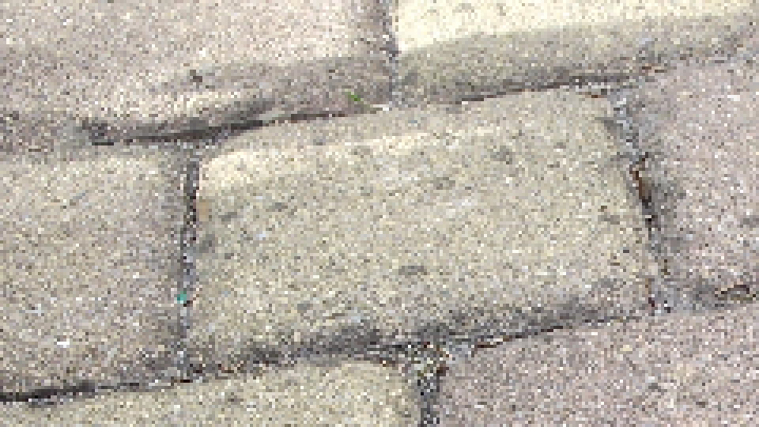
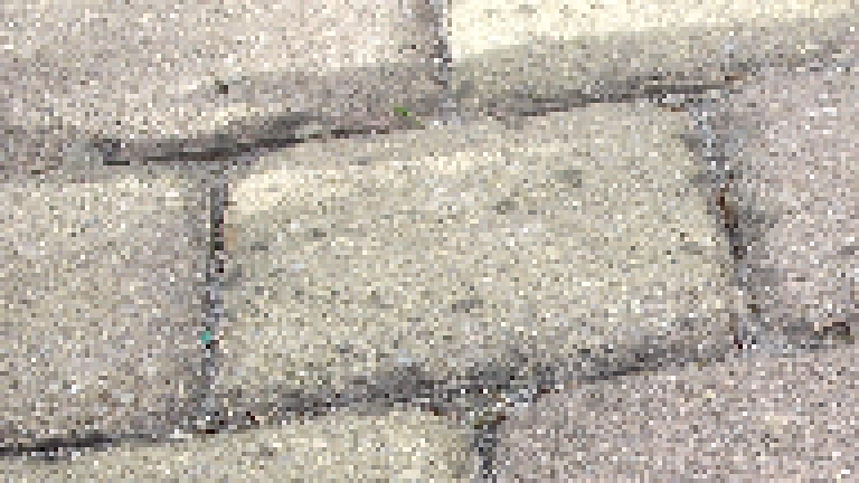
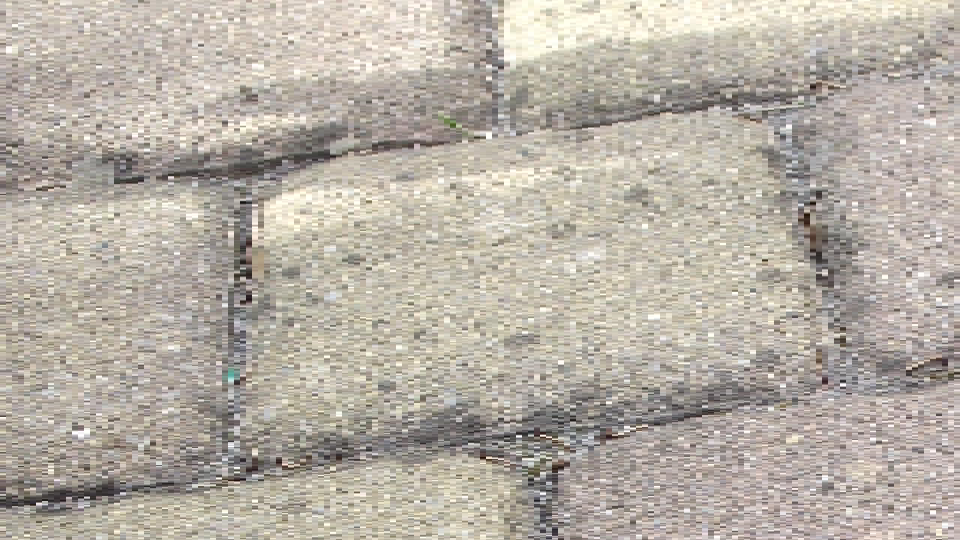
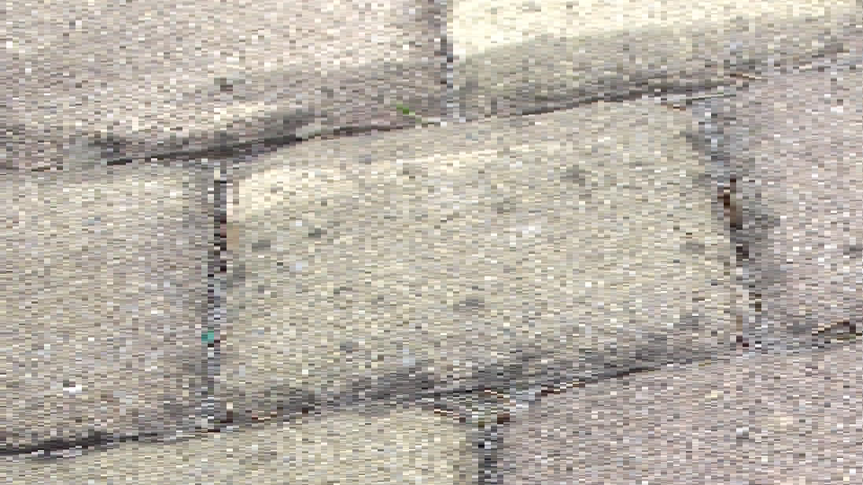
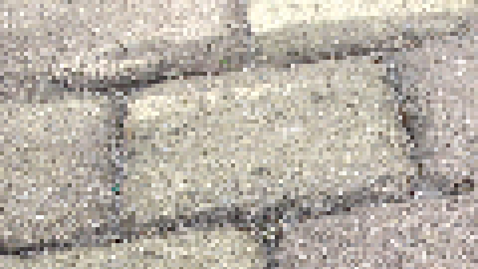
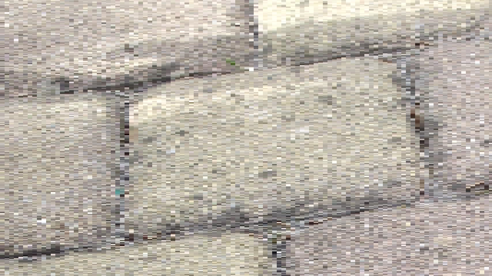
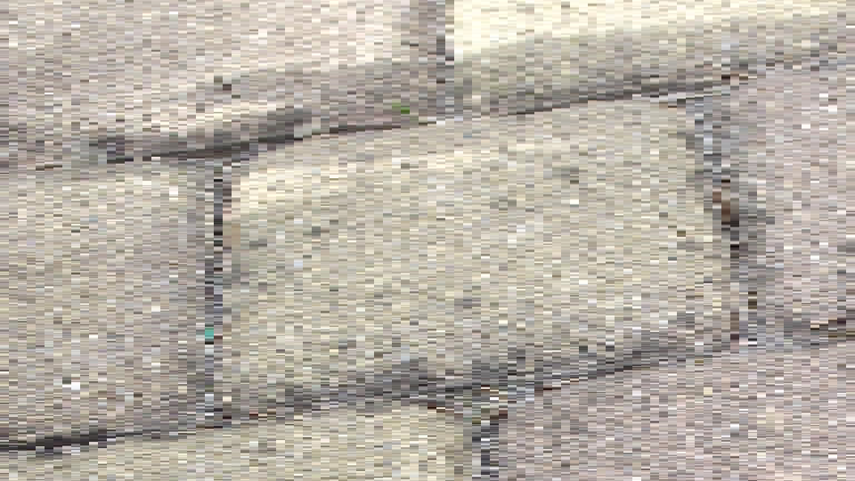

Aufgabe 1
Loesung
Bescheibung
Loesung
Bei Bildern versucht man ein analoges Signal (echtes Bild) in ein digitales Signal (Bild auf Gerät) umzuwandeln.
damit es dabei nicht zum Informationsverlust kommt, mus man das Abtasttheorem einhalten.
Dadurch, dass beim Downsampiling pixel überschrieben werden, gehen viele Informationen verloren. Vier Pixel enthalten somit am ende nur die Informationen von einem
Graustufen Bilder:
RgbImage rgbImage = new RgbImage(960, 540, 24);
for (int y = 0; y < bmp.image.getHeight(); y++) {
for (int x = 0; x < bmp.image.getWidth(); x++) {
var pixel = bmp.image.getRgbPixel(x, y);
var nv = (int) (0.3 * pixel.r + 0.6 * pixel.g + 0.1 * pixel.b);
var newpixel = new PixelColor(nv, nv, nv);
rgbImage.setRgbPixel(x, y, newpixel);
}
}
Aliasing tritt auf, wenn die räumliche Auflösung zu niedrig ist, um feine Muster zu erfassen, was zum Moiré-Muster führt. Bei Videos entsteht Aliasing, wenn die Abtastfrequenz der Bildfolgen zu niedrig ist, wodurch visuelle Verzerrungen auftreten.
Das Bild wird verpixelt und die Veränderungen sind bei Nature sichtbarer als bei man-made. Das man-made Bild sieht im Original schon sehr rauschend aus, dadurch merkt man die Verpixelung nicht so stark.
Downsampiling Bilder:

RgbImage rgbImage = new RgbImage(960, 540, 24);
for (int y = 0; y < bmp.image.getHeight(); y++) {
for (int x = 0; x < bmp.image.getWidth(); x++) {
var nx = x - (x % pixels);
var pixel = bmp.image.getRgbPixel(nx, y);
rgbImage.setRgbPixel(x, y, pixel);
}
}
Man erkennt bei von Man-Made Bildern ruckartige RGB-Veränderungen,
da die Übergänge dort nicht so fein sind. Bei den Nature Bildern hingegen gibt es sanfte Farbverläufe,
die bei der Bitreduktion fast verschwinden. Deshalb fallen Bitveränderungen vor allem in den Nature Bildern
auf.
Wie kann man die Verschlechterung beschreiben?:
Durch die Bitreduktion hat man weniger Farben im Bild.
RgbImage rgbImage = new RgbImage(960, 540, 24);
for (int y = 0; y < bmp.image.getHeight(); y++) {
for (int x = 0; x < bmp.image.getWidth(); x++) {
var pixel = bmp.image.getRgbPixel(x, y);
var newpixel = new PixelColor(
(pixel.r >> reduced_bits) << reduced_bits,
(pixel.g >> reduced_bits) << reduced_bits,
(pixel.b >> reduced_bits) << reduced_bits
);
if (x == 0 && y == 0) {
System.out.println(pixel.toString());
System.out.println(newpixel.toString());
}
rgbImage.setRgbPixel(x, y, newpixel);
}
}